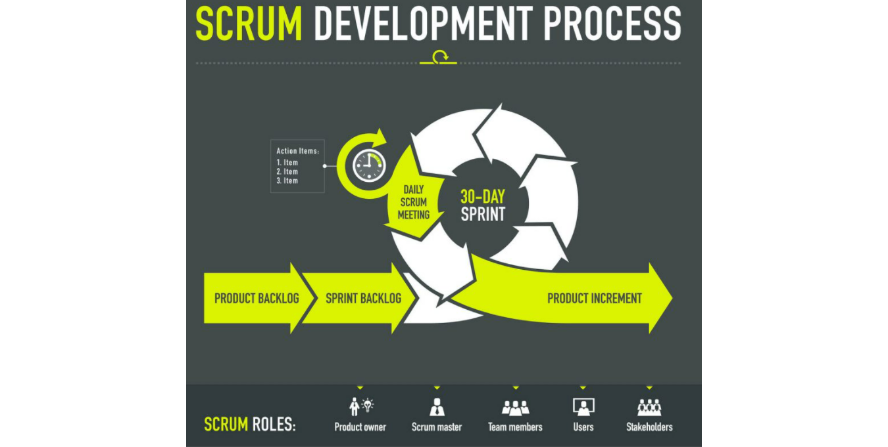
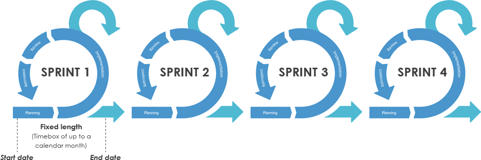
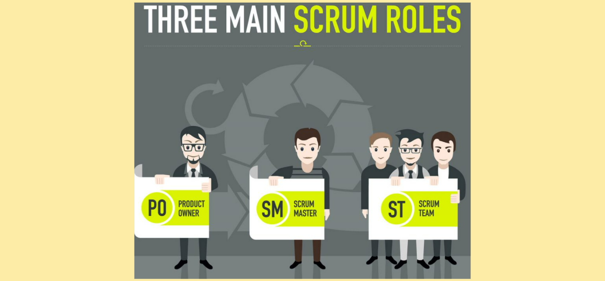
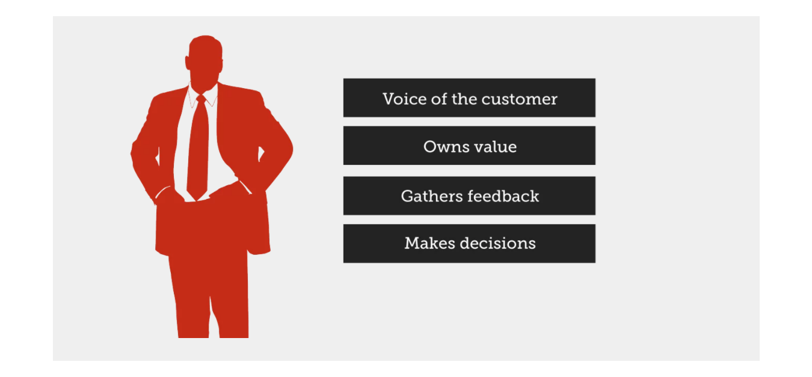
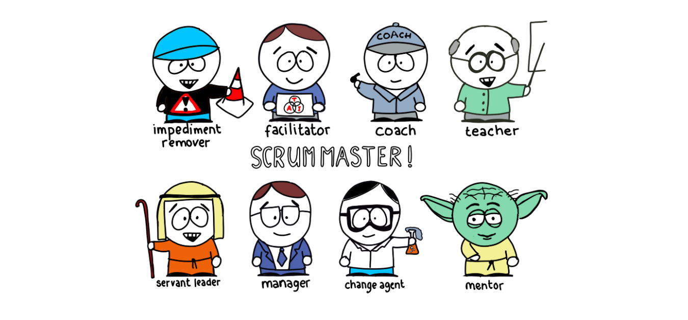
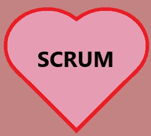

SCRUM
Shaustruk Katsiaryna
RS School
SCRUM
is an agile development methodology
Overview of Agile Methodology
Agile methodologies => the right product
with incremental and frequent delivery of small
chunks of functionality
- small cross-functional self-organizing teams
- enabling frequent customer
- feedback
- course correction as needed
“Agility is principally about mindset,
not practices.” – Jim Highsmith
SCRUM
framework
- adaptable
- fast
- flexible
- effective
the main goal of SCRUM
to satisfy the needs of clients
- environment of transparency in communication
- collective responsibility
- continuous progress
Scrum Methodology & Process

Sprints
SCRUM is done in temporary short and periodic blocks

Different Roles in Scrum

Product Owner(PO)
- what to build
- what not to build
- helps with difficulties

SCRUM Master(SM)
The person who leads the team

Events in Scrum
Scrum events ease the adaptation of some of the aspects of the process, the
product, progress or relationships
- Sprint: Sprint is the basic unit of work for a Scrum team
- Planning: what is going to be done in the Sprint and how it is going to be done
- Daily Scrum: to evaluate the progress and trend until the end of the Sprint, synchronizing the
activities and creating a plan for the next 24 hours
- Sprint Review: to show what work has been completed with regards to the product backlog for
future deliveries.
- Sprint Retrospective:to identify possible process improvements and generate a plan to implement
them in the next Sprint.
Scrum Artifacts
Scrum Artifacts are designed to guarantee the transparency of key information in decision making.
Scrum Artifacts
- Product Backlog (PB) - “What should be done”.
- Sprint Backlog (SB): a subset of items of the product backlog
- Increment - the sum of all the tasks, use cases, user stories, product backlogs...
Benefits of Scrum Methodology
- Quicker release of useable product to users and customers
- Higher quality
- Higher productivity
- Lower costs
- Greater ability to incorporate changes as they occur
- Better employee morale
- Better user satisfactio
- Being able to complete complex projects that previously could not be done
Scrum
=
day software development process for the implementation of usually complex projects
